Límites y continuidad
Límites de funciones
El límite de una función f cuando x tiende a c es L si f(x) puede estar tan cerca de L como queramos haciendo que x esté lo suficientemente cerca de c. De otro modo:
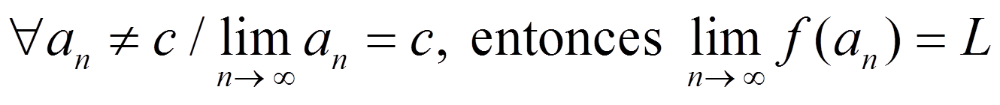
Se escribe:
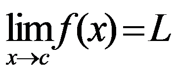
Por ejemplo:
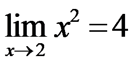 porque
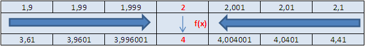
No siempre encontramos el mismo límite si nos acercamos por lados diferentes, por eso definimos los límites laterales:
– El límite de f cuando x tiende a c por la izquierda es L- si f(x) puede estar tan cerca de L- como queramos x haciendo que x esté lo suficientemente cerca de c por la izquierda:
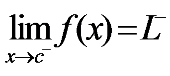
- El límite de f cuando x tiende a c por la derecha es L+ si f(x) puede estar tan cerca de L+ como queramos x haciendo que x esté lo suficientemente cerca de c por la derecha:
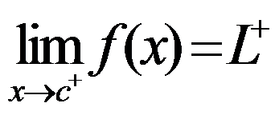
Por ejemplo:
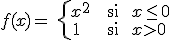
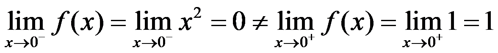
Entonces, la función tiene límite en c si y solo si los limites laterales existen y son iguales:
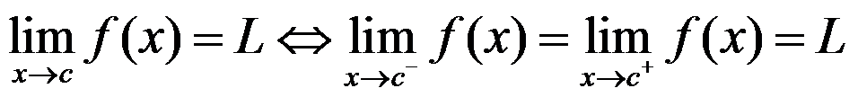
Entonces, en el ejemplo:
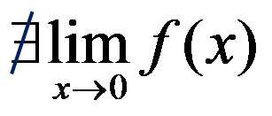
Los límites tienen las mismas propiedades que los de las sucesiones:
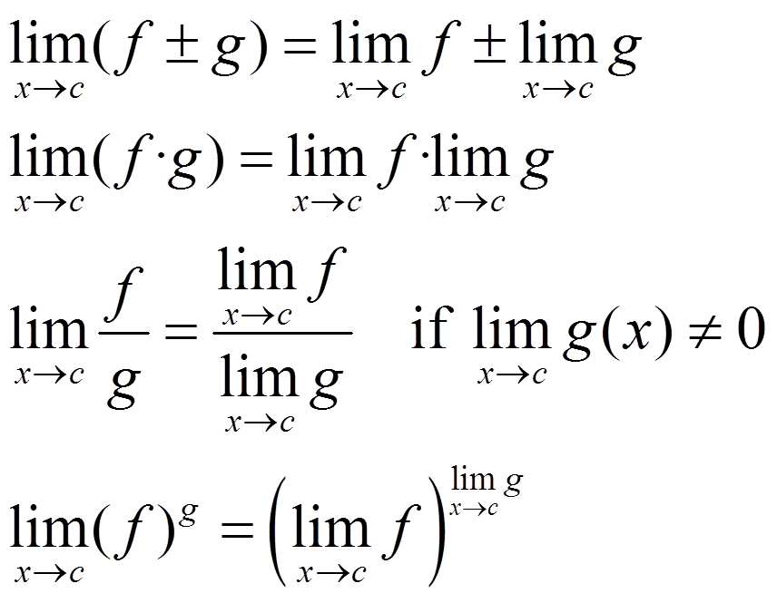
Ejercicio. Calcula el límite de f cuando x tiende a -1, 2 y 5, si:
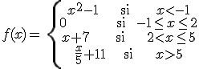
Soluciones:
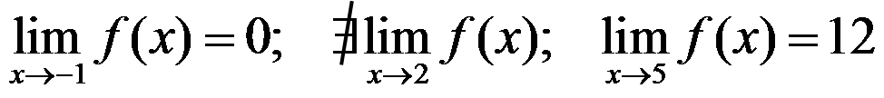
Obra publicada con Licencia Creative Commons Reconocimiento No comercial Compartir igual 4.0